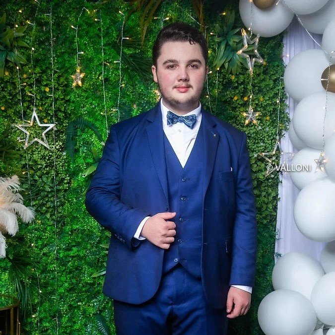
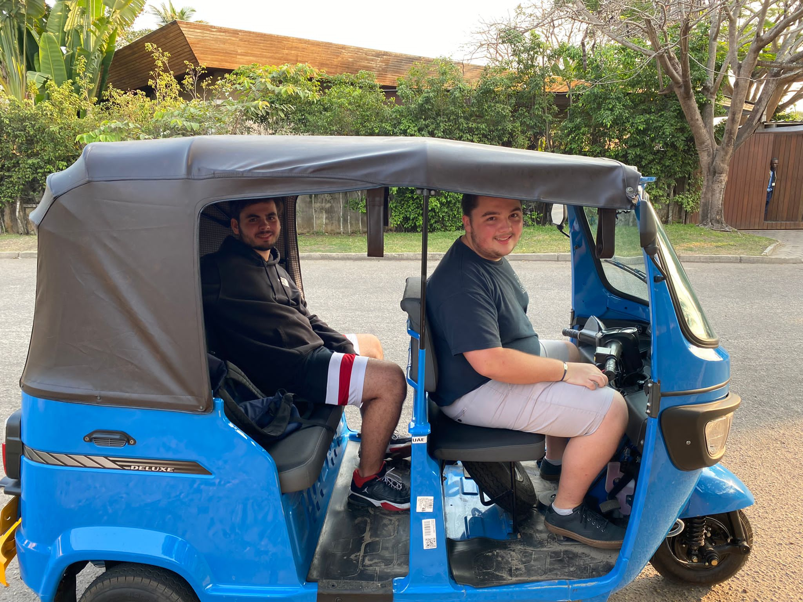

Clément Marlio-Marette's profile
I'm a first year student at ESSEC Business School in the Global BBA program in Singapore.
I live around the world in order to discover new cultures and expand my knowledge.
Countries
As said previously, I lived in many countries during my youthness which gave me an open mindness, the ability to adapt to any environment and finally the taste of discovering unpopular places!
Born in London, England  , I travelled to Romania
, I travelled to Romania  , where I stayed for 3 years. Later on, I flew to Africa where I lived 3 years in Cameroon
, where I stayed for 3 years. Later on, I flew to Africa where I lived 3 years in Cameroon  . Then, I went back to my birth place, London, for 5 years. I mainly learned english during this stay. To continue, I crossed once again the Mediterranean Sea to the biggest country in Africa: Algeria
. Then, I went back to my birth place, London, for 5 years. I mainly learned english during this stay. To continue, I crossed once again the Mediterranean Sea to the biggest country in Africa: Algeria  . Unknown from most people, I've lived there for 5 years. In my last expatriation with my parents, we travelled near the equator, to the Republic of Congo
. Unknown from most people, I've lived there for 5 years. In my last expatriation with my parents, we travelled near the equator, to the Republic of Congo  . Even though it was the shortest stay I've ever done, 1 year, it was so enriching! ... But the adventure NEVER stops! Once again, and here for the first time, I had the world on my hands, with countless destinations to choose, and the first one was in a continent I've never visited before, in a country that may be small but is very developped, I call it Singapore
. Even though it was the shortest stay I've ever done, 1 year, it was so enriching! ... But the adventure NEVER stops! Once again, and here for the first time, I had the world on my hands, with countless destinations to choose, and the first one was in a continent I've never visited before, in a country that may be small but is very developped, I call it Singapore  !
!
Driving
I am passionate about driving. It gives me this alone-time where I can enjoy speed and fun while listening to music. From looking at the beautiful views to being with friends and family, I simply miss when I am not able to drive.
I got my driving license when I was only 16 in the Republic of Congo. There, the laws are very loose and it's very easy to obtain a driving license. However, recently, while in a holiday trip to Vietnam, I drove for the first time a motorcycle. It was scary at first, but very easy and exciting to drive. After only a few days of riding one, I am now confident to try and get a motorcycle driving license. And who knows, maybe in Congo
